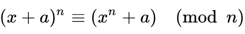
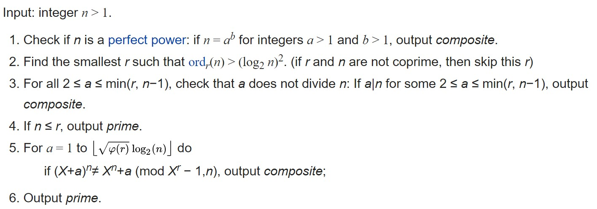
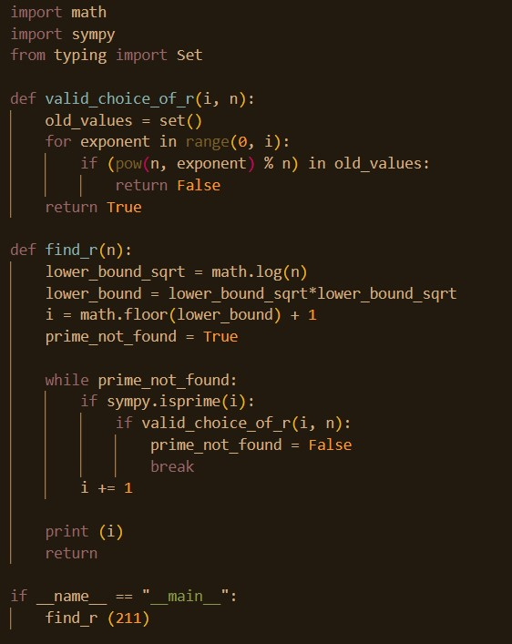

A prime number is a number that has exactly 2 factors, the number itself and 1. Prime numbers are an integral part of Mathematics – a large part of number theory and abstract algebra are focused on developing techniques for discovering new prime numbers. They are useful in a variety of ways in today’s digital age – for example, modern computer cryptography works by using prime factors of large numbers. The large number that was used to encrypt a file can be publicly known and available because finding out its prime factors, while technically possible, can take so much time that in practice it’s basically impractical. A modern super-computer could work on a 2048-bit factorization problem for longer than the current age of the universe, and still not get the answer.
Thus, scientists are constantly working on trying to find out faster ways to figure out if a number is prime. Why would this be an issue in the first place? Well, the naïve algorithm to find out if n is prime looks like this:
# Corner case
if n <=1 :
return False
# Check from 2 to n-1
for i in range(2, n):
if n % i == 0:
return False;
return True
Essentially, we check if any number between 1 and n divides n by seeing if the remainder is 0 or not (since it would be 0 if the number does divide n). This doesn’t seem too bad for smaller numbers but the bigger the number gets the longer it’ll take. For a 3 digit number? Basically instant. For a 5 digit number? Maybe a couple of minutes. For a 100 digit number? You’re looking at an hour or more possibly, depending on the processing capabilities of the computer. The “time complexity” of this algorithm is n! which in terms of complexity theory is essentially the slowest possible speed for an algorithm.
So how can we improve this?
There have been a number of methods that improve significantly on the n! time complexity mentioned above.
Several methods that improve significantly on the n! time complexity mentioned above have been developed. Some of them are probabilistic, i.e., they tell you the chance of a number being prime or not based on how long the method has been run (the longer you run the method, the more accurate of a prediction you’ll get). Since these are probabilistic, these tend to be “generally faster” than deterministic methods, i.e., methods that definitively tell you if the number is prime (the naïve method mentioned above would be an example of this).
In fact, up until 2003, no fast deterministic methods had been developed. By “fast”, I’m referring to polynomial time which is in the form of n^k where k is a non-negative integer – so like n (that is, the time taken increases linearly with the size of the input) or n^2 (time taken increases at a squared rate per time step). This is where the AKS algorithm comes in.
The AKS algorithm was the first deterministic polynomial time algorithm discovered to determine if a number is prime the proof for which does not rely on some unresolved conjecture or hypothesis. The AKS primality test is based upon the following theorem: Given an integer n>=2 and integer a coprime to n, n is prime if and only if the following polynomial congruence relation holds:
From Wikipedia, here’s the algorithm:
Since the algorithm is relatively complicated, I'm not going to go too much into detail. Let's focus on one of the subroutines - how to find a valid r.
As you can see, we try to find a valid choice of r to check if 211 is a prime. We get that r = 2.
I hope this was a good introduction to the concepts required to be able to start understanding the algorithm. It's quite complex, so I'll probably follow this up in another post. Until then, keep trying to learn more! I plan to make an updated list of useful resources for this and similar topics too.
Let me know what you thought about the post! Email me at sneheilsaxena@gmail.com - I'd love to chat more about this.